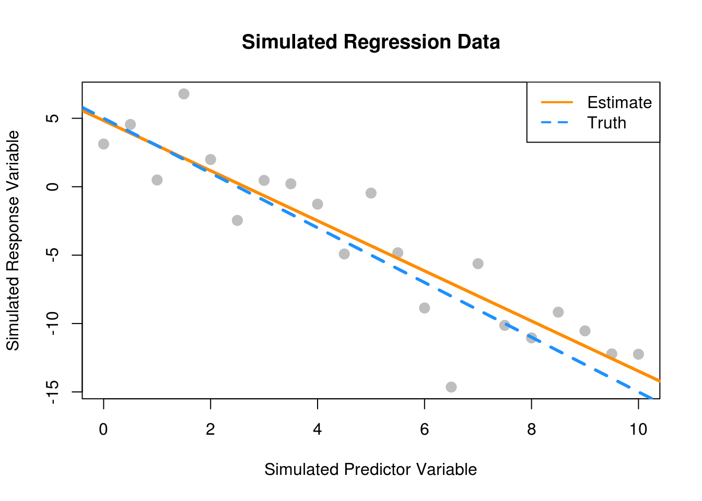
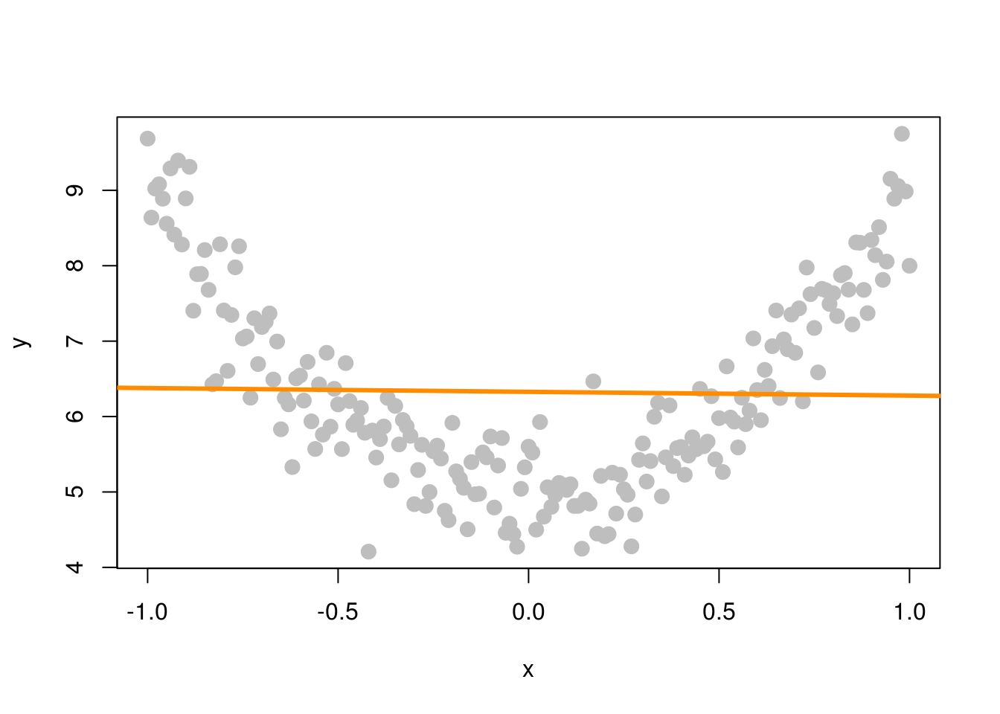

Chapter 4 Inference for Simple Linear Regression
“There are three types of lies: lies, damn lies, and statistics.”
— Benjamin Disraeli
After reading this chapter you will be able to:
- Understand the distributions of regression estimates.
- Create interval estimates for regression parameters, mean response, and predictions.
- Test for significance of regression.
Last chapter we defined the simple linear regression model,
\[ Y_i = \beta_0 + \beta_1 x_i + \epsilon_i \]
where \(\epsilon_i \sim N(0, \sigma^2)\). We then used observations \((x_i, y_i)\), for \(i = 1, 2, \ldots n\), to find values of \(\beta_0\) and \(\beta_1\) which minimized
\[ f(\beta_0, \beta_1) = \sum_{i = 1}^{n}(y_i - (\beta_0 + \beta_1 x_i))^2. \]
We called these values \(\hat{\beta}_0\) and \(\hat{\beta}_1\), which we found to be
\[ \begin{aligned} \hat{\beta}_1 &= \frac{S_{xy}}{S_{xx}} = \frac{\sum_{i = 1}^{n}(x_i - \bar{x})(y_i - \bar{y})}{\sum_{i = 1}^{n}(x_i - \bar{x})^2}\\ \hat{\beta}_0 &= \bar{y} - \hat{\beta}_1 \bar{x}. \end{aligned} \]
We also estimated \(\sigma ^2\) using \(s_e^2\). In other words, we found that \(s_e\) is an estimate of \(\sigma\), where;
\[ s_e = \text{RSE} = \sqrt{\frac{1}{n - 2}\sum_{i = 1}^n e_i^2} \]
which we also called \(\text{RSE}\), for “Residual Standard Error.”
When applied to the cars data, we obtained the following results:
stop_dist_model = lm(dist ~ speed, data = cars)
summary(stop_dist_model)##
## Call:
## lm(formula = dist ~ speed, data = cars)
##
## Residuals:
## Min 1Q Median 3Q Max
## -29.069 -9.525 -2.272 9.215 43.201
##
## Coefficients:
## Estimate Std. Error t value Pr(>|t|)
## (Intercept) -17.5791 6.7584 -2.601 0.0123 *
## speed 3.9324 0.4155 9.464 1.49e-12 ***
## ---
## Signif. codes: 0 '***' 0.001 '**' 0.01 '*' 0.05 '.' 0.1 ' ' 1
##
## Residual standard error: 15.38 on 48 degrees of freedom
## Multiple R-squared: 0.6511, Adjusted R-squared: 0.6438
## F-statistic: 89.57 on 1 and 48 DF, p-value: 1.49e-12Last chapter, we only discussed the Estimate, Residual standard error, and Multiple R-squared values. In this chapter, we will discuss all of the information under Coefficients as well as F-statistic.
plot(dist ~ speed, data = cars,
xlab = "Speed (in Miles Per Hour)",
ylab = "Stopping Distance (in Feet)",
main = "Stopping Distance vs Speed",
pch = 20,
cex = 2,
col = "grey")
abline(stop_dist_model, lwd = 5, col = "darkorange")
To get started, we’ll note that there is another equivalent expression for \(S_{xy}\) which we did not see last chapter,
\[ S_{xy}= \sum_{i = 1}^{n}(x_i - \bar{x})(y_i - \bar{y}) = \sum_{i = 1}^{n}(x_i - \bar{x}) y_i. \]
This may be a surprising equivalence. (Maybe try to prove it.) However, it will be useful for illustrating concepts in this chapter.
Note that, \(\hat{\beta}_1\) is a sample statistic when calculated with observed data as written above, as is \(\hat{\beta}_0\).
However, in this chapter it will often be convenient to use both \(\hat{\beta}_1\) and \(\hat{\beta}_0\) as random variables, that is, we have not yet observed the values for each \(Y_i\). When this is the case, we will use a slightly different notation, substituting in capital \(Y_i\) for lower case \(y_i\).
\[ \begin{aligned} \hat{\beta}_1 &= \frac{\sum_{i = 1}^{n}(x_i - \bar{x}) Y_i}{\sum_{i = 1}^{n}(x_i - \bar{x})^2} \\ \hat{\beta}_0 &= \bar{Y} - \hat{\beta}_1 \bar{x} \end{aligned} \]
Last chapter we argued that these estimates of unknown model parameters \(\beta_0\) and \(\beta_1\) were good because we obtained them by minimizing errors. We will now discuss the Gauss–Markov theorem which takes this idea further, showing that these estimates are actually the “best” estimates, from a certain point of view.
4.1 Gauss–Markov Theorem
The Gauss–Markov theorem tells us that when estimating the parameters of the simple linear regression model \(\beta_0\) and \(\beta_1\), the \(\hat{\beta}_0\) and \(\hat{\beta}_1\) which we derived are the best linear unbiased estimates, or BLUE for short. (The actual conditions for the Gauss–Markov theorem are more relaxed than the SLR model.)
We will now discuss linear, unbiased, and best as is relates to these estimates.
Linear
Recall, in the SLR setup that the \(x_i\) values are considered fixed and known quantities. Then a linear estimate is one which can be written as a linear combination of the \(Y_i\). In the case of \(\hat{\beta}_1\) we see
\[ \hat{\beta}_1 = \frac{\sum_{i = 1}^{n}(x_i - \bar{x}) Y_i}{\sum_{i = 1}^{n}(x_i - \bar{x})^2} = \sum_{i = 1}^n k_i Y_i = k_1 Y_1 + k_2 Y_2 + \cdots k_n Y_n \]
where \(k_i = \displaystyle\frac{(x_i - \bar{x})}{\sum_{i = 1}^{n}(x_i - \bar{x})^2}\).
In a similar fashion, we could show that \(\hat{\beta}_0\) can be written as a linear combination of the \(Y_i\). Thus both \(\hat{\beta}_0\) and \(\hat{\beta}_1\) are linear estimators.
Unbiased
Now that we know our estimates are linear, how good are these estimates? One measure of the “goodness” of an estimate is its bias. Specifically, we prefer estimates that are unbiased, meaning their expected value is the parameter being estimated.
In the case of the regression estimates, we have,
\[ \begin{aligned} \text{E}[\hat{\beta}_0] &= \beta_0 \\ \text{E}[\hat{\beta}_1] &= \beta_1. \end{aligned} \]
This tells us that, when the conditions of the SLR model are met, on average our estimates will be correct. However, as we saw last chapter when simulating from the SLR model, that does not mean that each individual estimate will be correct. Only that, if we repeated the process an infinite number of times, on average the estimate would be correct.
Best
Now, if we restrict ourselves to both linear and unbiased estimates, how do we define the best estimate? The estimate with the minimum variance.
First note that it is very easy to create an estimate for \(\beta_1\) that has very low variance, but is not unbiased. For example, define:
\[ \hat{\theta}_{BAD} = 5. \]
Then, since \(\hat{\theta}_{BAD}\) is a constant value,
\[ \text{Var}[\hat{\theta}_{BAD}] = 0. \]
However since,
\[ \text{E}[\hat{\theta}_{BAD}] = 5 \]
we say that \(\hat{\theta}_{BAD}\) is a biased estimator unless \(\beta_1 = 5\), which we would not know ahead of time. For this reason, it is a terrible estimate (unless by chance \(\beta_1 = 5\)) even though it has the smallest possible variance. This is part of the reason we restrict ourselves to unbiased estimates. What good is an estimate, if it estimates the wrong quantity?
So now, the natural question is, what are the variances of \(\hat{\beta}_0\) and \(\hat{\beta}_1\)? They are,
\[ \begin{aligned} \text{Var}[\hat{\beta}_0] &= \sigma^2 \left(\frac{1}{n} + \frac{\bar{x}^2}{S_{xx}}\right) \\ \text{Var}[\hat{\beta}_1] &= \frac{\sigma^2}{S_{xx}}. \end{aligned} \]
These quantify the variability of the estimates due to random chance during sampling. Are these “the best”? Are these variances as small as we can possibility get? You’ll just have to take our word for it that they are because showing that this is true is beyond the scope of this course.
4.2 Sampling Distributions
Now that we have “redefined” the estimates for \(\hat{\beta}_0\) and \(\hat{\beta}_1\) as random variables, we can discuss their sampling distribution, which is the distribution when a statistic is considered a random variable.
Since both \(\hat{\beta}_0\) and \(\hat{\beta}_1\) are a linear combination of the \(Y_i\) and each \(Y_i\) is normally distributed, then both \(\hat{\beta}_0\) and \(\hat{\beta}_1\) also follow a normal distribution.
Then, putting all of the above together, we arrive at the distributions of \(\hat{\beta}_0\) and \(\hat{\beta}_1\).
For \(\hat{\beta}_1\) we say,
\[ \hat{\beta}_1 = \frac{S_{xy}}{S_{xx}} = \frac{\sum_{i = 1}^{n}(x_i - \bar{x}) Y_i}{\sum_{i = 1}^{n}(x_i - \bar{x})^2} \sim N\left( \beta_1, \ \frac{\sigma^2}{\sum_{i = 1}^{n}(x_i - \bar{x})^2} \right). \]
Or more succinctly,
\[ \hat{\beta}_1 \sim N\left( \beta_1, \frac{\sigma^2}{S_{xx}} \right). \]
And for \(\hat{\beta}_0\),
\[ \hat{\beta}_0 = \bar{Y} - \hat{\beta}_1 \bar{x} \sim N\left( \beta_0, \ \frac{\sigma^2 \sum_{i = 1}^{n}x_i^2}{n \sum_{i = 1}^{n}(x_i - \bar{x})^2} \right). \]
Or more succinctly,
\[ \hat{\beta}_0 \sim N\left( \beta_0, \sigma^2 \left(\frac{1}{n} + \frac{\bar{x}^2}{S_{xx}}\right) \right) \]
At this point we have neglected to prove a number of these results. Instead of working through the tedious derivations of these sampling distributions, we will instead justify these results to ourselves using simulation.
A note to current readers: These derivations and proofs may be added to an appendix at a later time. You can also find these results in nearly any standard linear regression textbook. At UIUC, these results will likely be presented in both STAT 424 and STAT 425. However, since you will not be asked to perform derivations of this type in this course, they are for now omitted.
4.2.1 Simulating Sampling Distributions
To verify the above results, we will simulate samples of size \(n = 100\) from the model
\[ Y_i = \beta_0 + \beta_1 x_i + \epsilon_i \]
where \(\epsilon_i \sim N(0, \sigma^2).\) In this case, the parameters are known to be:
- \(\beta_0 = 3\)
- \(\beta_1 = 6\)
- \(\sigma^2 = 4\)
Then, based on the above, we should find that
\[ \hat{\beta}_1 \sim N\left( \beta_1, \frac{\sigma^2}{S_{xx}} \right) \]
and
\[ \hat{\beta}_0 \sim N\left( \beta_0, \sigma^2 \left(\frac{1}{n} + \frac{\bar{x}^2}{S_{xx}}\right) \right). \]
First we need to decide ahead of time what our \(x\) values will be for this simulation, since the \(x\) values in SLR are also considered known quantities. The choice of \(x\) values is arbitrary. Here we also set a seed for randomization, and calculate \(S_{xx}\) which we will need going forward.
set.seed(42)
sample_size = 100 # this is n
x = seq(-1, 1, length = sample_size)
Sxx = sum((x - mean(x)) ^ 2)We also fix our parameter values.
beta_0 = 3
beta_1 = 6
sigma = 2With this information, we know the sampling distributions should be:
(var_beta_1_hat = sigma ^ 2 / Sxx)## [1] 0.1176238(var_beta_0_hat = sigma ^ 2 * (1 / sample_size + mean(x) ^ 2 / Sxx))## [1] 0.04\[ \hat{\beta}_1 \sim N( 6, 0.1176238) \]
and
\[ \hat{\beta}_0 \sim N( 3, 0.04). \]
That is,
\[ \begin{aligned} \text{E}[\hat{\beta}_1] &= 6 \\ \text{Var}[\hat{\beta}_1] &= 0.1176238 \end{aligned} \]
and
\[ \begin{aligned} \text{E}[\hat{\beta}_0] &= 3 \\ \text{Var}[\hat{\beta}_0] &= 0.04. \end{aligned} \]
We now simulate data from this model 10,000 times. Note this may not be the most R way of doing the simulation. We perform the simulation in this manner in an attempt at clarity. For example, we could have used the sim_slr() function from the previous chapter. We also simply store variables in the global environment instead of creating a data frame for each new simulated dataset.
num_samples = 10000
beta_0_hats = rep(0, num_samples)
beta_1_hats = rep(0, num_samples)
for(i in 1:num_samples) {
eps = rnorm(sample_size, mean = 0, sd = sigma)
y = beta_0 + beta_1 * x + eps
sim_model = lm(y ~ x)
beta_0_hats[i] = coef(sim_model)[1]
beta_1_hats[i] = coef(sim_model)[2]
}Each time we simulated the data, we obtained values of the estimated coefficiets. The variables beta_0_hats and beta_1_hats now store 10,000 simulated values of \(\hat{\beta}_0\) and \(\hat{\beta}_1\) respectively.
We first verify the distribution of \(\hat{\beta}_1\).
mean(beta_1_hats) # empirical mean## [1] 6.001998beta_1 # true mean## [1] 6var(beta_1_hats) # empirical variance## [1] 0.11899var_beta_1_hat # true variance## [1] 0.1176238We see that the empirical and true means and variances are very similar. We also verify that the empirical distribution is normal. To do so, we plot a histogram of the beta_1_hats, and add the curve for the true distribution of \(\hat{\beta}_1\). We use prob = TRUE to put the histogram on the same scale as the normal curve.
# note need to use prob = TRUE
hist(beta_1_hats, prob = TRUE, breaks = 20,
xlab = expression(hat(beta)[1]), main = "", border = "dodgerblue")
curve(dnorm(x, mean = beta_1, sd = sqrt(var_beta_1_hat)),
col = "darkorange", add = TRUE, lwd = 3)
We then repeat the process for \(\hat{\beta}_0\).
mean(beta_0_hats) # empirical mean## [1] 3.001147beta_0 # true mean## [1] 3var(beta_0_hats) # empirical variance## [1] 0.04017924var_beta_0_hat # true variance## [1] 0.04hist(beta_0_hats, prob = TRUE, breaks = 25,
xlab = expression(hat(beta)[0]), main = "", border = "dodgerblue")
curve(dnorm(x, mean = beta_0, sd = sqrt(var_beta_0_hat)),
col = "darkorange", add = TRUE, lwd = 3)
In this simulation study, we have only simulated a finite number of samples. To truly verify the distributional results, we would need to observe an infinite number of samples. However, the following plot should make it clear that if we continued simulating, the empirical results would get closer and closer to what we should expect.
par(mar = c(5, 5, 1, 1)) # adjusted plot margins, otherwise the "hat" does not display
plot(cumsum(beta_1_hats) / (1:length(beta_1_hats)), type = "l", ylim = c(5.95, 6.05),
xlab = "Number of Simulations",
ylab = expression("Empirical Mean of " ~ hat(beta)[1]),
col = "dodgerblue")
abline(h = 6, col = "darkorange", lwd = 2)
par(mar = c(5, 5, 1, 1)) # adjusted plot margins, otherwise the "hat" does not display
plot(cumsum(beta_0_hats) / (1:length(beta_0_hats)), type = "l", ylim = c(2.95, 3.05),
xlab = "Number of Simulations",
ylab = expression("Empirical Mean of " ~ hat(beta)[0]),
col = "dodgerblue")
abline(h = 3, col = "darkorange", lwd = 2)
4.3 Standard Errors
So now we believe the two distributional results,
\[ \begin{aligned} \hat{\beta}_0 &\sim N\left( \beta_0, \sigma^2 \left(\frac{1}{n} + \frac{\bar{x}^2}{S_{xx}}\right) \right) \\ \hat{\beta}_1 &\sim N\left( \beta_1, \frac{\sigma^2}{S_{xx}} \right). \end{aligned} \]
Then by standardizing these results we find that
\[ \frac{\hat{\beta}_0 - \beta_0}{\text{SD}[\hat{\beta}_0]} \sim N(0, 1) \]
and
\[ \frac{\hat{\beta}_1 - \beta_1}{\text{SD}[\hat{\beta}_1]} \sim N(0, 1) \]
where
\[ \text{SD}[\hat{\beta}_0] = \sigma\sqrt{\frac{1}{n} + \frac{\bar{x}^2}{S_{xx}}} \]
and
\[ \text{SD}[\hat{\beta}_1] = \frac{\sigma}{\sqrt{S_{xx}}}. \]
Since we don’t know \(\sigma\) in practice, we will have to estimate it using \(s_e\), which we plug into our existing expression for the standard deviations of our estimates.
These two new expressions are called standard errors which are the estimated standard deviations of the sampling distributions.
\[ \text{SE}[\hat{\beta}_0] = s_e\sqrt{\frac{1}{n} + \frac{\bar{x}^2}{S_{xx}}} \]
\[ \text{SE}[\hat{\beta}_1] = \frac{s_e}{\sqrt{S_{xx}}} \]
Now if we divide by the standard error, instead of the standard deviation, we obtain the following results which will allow us to make confidence intervals and perform hypothesis testing.
\[ \frac{\hat{\beta}_0 - \beta_0}{\text{SE}[\hat{\beta}_0]} \sim t_{n-2} \]
\[ \frac{\hat{\beta}_1 - \beta_1}{\text{SE}[\hat{\beta}_1]} \sim t_{n-2} \]
To see this, first note that,
\[ \frac{\text{RSS}}{\sigma^2} = \frac{(n-2)s_e^2}{\sigma^2} \sim \chi_{n-2}^2. \]
Also recall that a random variable \(T\) defined as,
\[ T = \frac{Z}{\sqrt{\frac{\chi_{d}^2}{d}}} \]
follows a \(t\) distribution with \(d\) degrees of freedom, where \(\chi_{d}^2\) is a \(\chi^2\) random variable with \(d\) degrees of freedom.
We write,
\[ T \sim t_d \]
to say that the random variable \(T\) follows a \(t\) distribution with \(d\) degrees of freedom.
Then we use the classic trick of “multiply by 1” and some rearranging to arrive at
\[ \begin{aligned} \frac{\hat{\beta}_1 - \beta_1}{\text{SE}[\hat{\beta}_1]} &= \frac{\hat{\beta}_1 - \beta_1}{s_e / \sqrt{S_{xx}}} \\ &= \frac{\hat{\beta}_1 - \beta_1}{s_e / \sqrt{S_{xx}}} \cdot \frac{\sigma / \sqrt{S_{xx}}}{\sigma / \sqrt{S_{xx}}} \\ &= \frac{\hat{\beta}_1 - \beta_1}{\sigma / \sqrt{S_{xx}}} \cdot \frac{\sigma / \sqrt{S_{xx}}}{s_e / \sqrt{S_{xx}}} \\ &= \frac{\hat{\beta}_1 - \beta_1}{\sigma / \sqrt{S_{xx}}} \bigg/ \sqrt{\frac{s_e^2}{\sigma^2}} \\ &= \frac{\hat{\beta}_1 - \beta_1}{\text{SD}[\hat{\beta}_1]} \bigg/ \sqrt{\frac{\frac{(n - 2)s_e^2}{\sigma^2}}{n - 2}} \sim \frac{Z}{\sqrt{\frac{\chi_{n-2}^2}{n-2}}} \sim t_{n-2} \end{aligned} \]
where \(Z \sim N(0,1)\).
Recall that a \(t\) distribution is similar to a standard normal, but with heavier tails. As the degrees of freedom increases, the \(t\) distribution becomes more and more like a standard normal. Below we plot a standard normal distribution as well as two examples of a \(t\) distribution with different degrees of freedom. Notice how the \(t\) distribution with the larger degrees of freedom is more similar to the standard normal curve.
# define grid of x values
x = seq(-4, 4, length = 100)
# plot curve for standard normal
plot(x, dnorm(x), type = "l", lty = 1, lwd = 2,
xlab = "x", ylab = "Density", main = "Normal vs t Distributions")
# add curves for t distributions
lines(x, dt(x, df = 1), lty = 3, lwd = 2, col = "darkorange")
lines(x, dt(x, df = 10), lty = 2, lwd = 2, col = "dodgerblue")
# add legend
legend("topright", title = "Distributions",
legend = c("t, df = 1", "t, df = 10", "Standard Normal"),
lwd = 2, lty=c(3, 2, 1), col = c("darkorange", "dodgerblue", "black"))
4.4 Confidence Intervals for Slope and Intercept
Recall that confidence intervals for means often take the form:
\[ \text{EST} \pm \text{CRIT} \cdot \text{SE} \]
or
\[ \text{EST} \pm \text{MARGIN} \]
where \(\text{EST}\) is an estimate for the parameter of interest, \(\text{SE}\) is the standard error of the estimate, and \(\text{MARGIN} = \text{CRIT} \cdot \text{SE}\).
Then, for \(\beta_0\) and \(\beta_1\) we can create confidence intervals using
\[ \hat{\beta}_0 \pm t_{\alpha/2, n - 2} \cdot \text{SE}[\hat{\beta}_0] \quad \quad \quad \hat{\beta}_0 \pm t_{\alpha/2, n - 2} \cdot s_e\sqrt{\frac{1}{n}+\frac{\bar{x}^2}{S_{xx}}} \]
and
\[ \hat{\beta}_1 \pm t_{\alpha/2, n - 2} \cdot \text{SE}[\hat{\beta}_1] \quad \quad \quad \hat{\beta}_1 \pm t_{\alpha/2, n - 2} \cdot \frac{s_e}{\sqrt{S_{xx}}} \]
where \(t_{\alpha/2, n - 2}\) is the critical value such that \(P(t_{n-2} > t_{\alpha/2, n - 2}) = \alpha/2\).
4.5 Hypothesis Tests
“We may speak of this hypothesis as the ‘null hypothesis’, and it should be noted that the null hypothesis is never proved or established, but is possibly disproved, in the course of experimentation.”
— Ronald Aylmer Fisher
Recall that a test statistic (\(\text{TS}\)) for testing means often take the form:
\[ \text{TS} = \frac{\text{EST} - \text{HYP}}{\text{SE}} \]
where \(\text{EST}\) is an estimate for the parameter of interest, \(\text{HYP}\) is a hypothesized value of the parameter, and \(\text{SE}\) is the standard error of the estimate.
So, to test
\[ H_0: \beta_0 = \beta_{00} \quad \text{vs} \quad H_1: \beta_0 \neq \beta_{00} \]
we use the test statistic
\[ t = \frac{\hat{\beta}_0 - \beta_{00}}{\text{SE}[\hat{\beta}_0]} = \frac{\hat{\beta}_0-\beta_{00}}{s_e\sqrt{\frac{1}{n} + \frac{\bar{x}^2}{S_{xx}}}} \]
which, under the null hypothesis, follows a \(t\) distribution with \(n - 2\) degrees of freedom. We use \(\beta_{00}\) to denote the hypothesized value of \(\beta_0\).
Similarly, to test
\[ H_0: \beta_1 = \beta_{10} \quad \text{vs} \quad H_1: \beta_1 \neq \beta_{10} \]
we use the test statistic
\[ t = \frac{\hat{\beta}_1-\beta_{10}}{\text{SE}[\hat{\beta}_1]} = \frac{\hat{\beta}_1-\beta_{10}}{s_e / \sqrt{S_{xx}}} \]
which again, under the null hypothesis, follows a \(t\) distribution with \(n - 2\) degrees of freedom. We now use \(\beta_{10}\) to denote the hypothesized value of \(\beta_1\).
4.6 cars Example
We now return to the cars example from last chapter to illustrate these concepts. We first fit the model using lm() then use summary() to view the results in greater detail.
stop_dist_model = lm(dist ~ speed, data = cars)
summary(stop_dist_model)##
## Call:
## lm(formula = dist ~ speed, data = cars)
##
## Residuals:
## Min 1Q Median 3Q Max
## -29.069 -9.525 -2.272 9.215 43.201
##
## Coefficients:
## Estimate Std. Error t value Pr(>|t|)
## (Intercept) -17.5791 6.7584 -2.601 0.0123 *
## speed 3.9324 0.4155 9.464 1.49e-12 ***
## ---
## Signif. codes: 0 '***' 0.001 '**' 0.01 '*' 0.05 '.' 0.1 ' ' 1
##
## Residual standard error: 15.38 on 48 degrees of freedom
## Multiple R-squared: 0.6511, Adjusted R-squared: 0.6438
## F-statistic: 89.57 on 1 and 48 DF, p-value: 1.49e-124.6.1 Tests in R
We will now discuss the results displayed called Coefficients. First recall that we can extract this information directly.
names(summary(stop_dist_model))## [1] "call" "terms" "residuals" "coefficients"
## [5] "aliased" "sigma" "df" "r.squared"
## [9] "adj.r.squared" "fstatistic" "cov.unscaled"summary(stop_dist_model)$coefficients## Estimate Std. Error t value Pr(>|t|)
## (Intercept) -17.579095 6.7584402 -2.601058 1.231882e-02
## speed 3.932409 0.4155128 9.463990 1.489836e-12The names() function tells us what information is available, and then we use the $ operator and coefficients to extract the information we are interested in. Two values here should be immediately familiar.
\[ \hat{\beta}_0 = -17.5790949 \]
and
\[ \hat{\beta}_1 = 3.9324088 \]
which are our estimates for the model parameters \(\beta_0\) and \(\beta_1\).
Let’s now focus on the second row of output, which is relevant to \(\beta_1\).
summary(stop_dist_model)$coefficients[2,]## Estimate Std. Error t value Pr(>|t|)
## 3.932409e+00 4.155128e-01 9.463990e+00 1.489836e-12Again, the first value, Estimate is
\[ \hat{\beta}_1 = 3.9324088. \]
The second value, Std. Error, is the standard error of \(\hat{\beta}_1\),
\[ \text{SE}[\hat{\beta}_1] = \frac{s_e}{\sqrt{S_{xx}}} = 0.4155128. \]
The third value, t value, is the value of the test statistic for testing \(H_0: \beta_1 = 0\) vs \(H_1: \beta_1 \neq 0\),
\[ t = \frac{\hat{\beta}_1-0}{\text{SE}[\hat{\beta}_1]} = \frac{\hat{\beta}_1-0}{s_e / \sqrt{S_{xx}}} = 9.46399. \]
Lastly, Pr(>|t|), gives us the p-value of that test.
\[ \text{p-value} = 1.4898365\times 10^{-12} \]
Note here, we are specifically testing whether or not \(\beta_1 = 0\).
The first row of output reports the same values, but for \(\beta_0\).
summary(stop_dist_model)$coefficients[1,]## Estimate Std. Error t value Pr(>|t|)
## -17.57909489 6.75844017 -2.60105800 0.01231882In summary, the following code stores the information of summary(stop_dist_model)$coefficients in a new variable stop_dist_model_test_info, then extracts each element into a new variable which describes the information it contains.
stop_dist_model_test_info = summary(stop_dist_model)$coefficients
beta_0_hat = stop_dist_model_test_info[1, 1] # Estimate
beta_0_hat_se = stop_dist_model_test_info[1, 2] # Std. Error
beta_0_hat_t = stop_dist_model_test_info[1, 3] # t value
beta_0_hat_pval = stop_dist_model_test_info[1, 4] # Pr(>|t|)
beta_1_hat = stop_dist_model_test_info[2, 1] # Estimate
beta_1_hat_se = stop_dist_model_test_info[2, 2] # Std. Error
beta_1_hat_t = stop_dist_model_test_info[2, 3] # t value
beta_1_hat_pval = stop_dist_model_test_info[2, 4] # Pr(>|t|)We can then verify some equivalent expressions: the \(t\) test statistic for \(\hat{\beta}_1\) and the two-sided p-value associated with that test statistic.
(beta_1_hat - 0) / beta_1_hat_se## [1] 9.46399beta_1_hat_t## [1] 9.463992 * pt(abs(beta_1_hat_t), df = length(resid(stop_dist_model)) - 2, lower.tail = FALSE)## [1] 1.489836e-12beta_1_hat_pval## [1] 1.489836e-124.6.2 Significance of Regression, t-Test
We pause to discuss the significance of regression test. First, note that based on the above distributional results, we could test \(\beta_0\) and \(\beta_1\) against any particular value, and perform both one and two-sided tests.
However, one very specific test,
\[ H_0: \beta_1 = 0 \quad \text{vs} \quad H_1: \beta_1 \neq 0 \]
is used most often. Let’s think about this test in terms of the simple linear regression model,
\[ Y_i = \beta_0 + \beta_1 x_i + \epsilon_i. \]
If we assume the null hypothesis is true, then \(\beta_1 = 0\) and we have the model,
\[ Y_i = \beta_0 + \epsilon_i. \]
In this model, the response does not depend on the predictor. So then we could think of this test in the following way,
- Under \(H_0\) there is not a significant linear relationship between \(x\) and \(y\).
- Under \(H_1\) there is a significance linear relationship between \(x\) and \(y\).
For the cars example,
- Under \(H_0\) there is not a significant linear relationship between speed and stopping distance.
- Under \(H_1\) there is a significant linear relationship between speed and stopping distance.
Again, that test is seen in the output from summary(),
\[ \text{p-value} = 1.4898365\times 10^{-12}. \]
With this extremely low p-value, we would reject the null hypothesis at any reasonable \(\alpha\) level, say for example \(\alpha = 0.01\). So we say there is a significant linear relationship between speed and stopping distance. Notice that we emphasize linear.

In this plot of simulated data, we see a clear relationship between \(x\) and \(y\), however it is not a linear relationship. If we fit a line to this data, it is very flat. The resulting test for \(H_0: \beta_1 = 0\) vs \(H_1: \beta_1 \neq 0\) gives a large p-value, in this case \(0.7564548\), so we would fail to reject and say that there is no significant linear relationship between \(x\) and \(y\). We will see later how to fit a curve to this data using a “linear” model, but for now, realize that testing \(H_0: \beta_1 = 0\) vs \(H_1: \beta_1 \neq 0\) can only detect straight line relationships.
4.6.3 Confidence Intervals in R
Using R we can very easily obtain the confidence intervals for \(\beta_0\) and \(\beta_1\).
confint(stop_dist_model, level = 0.99)## 0.5 % 99.5 %
## (Intercept) -35.706610 0.5484205
## speed 2.817919 5.0468988This automatically calculates 99% confidence intervals for both \(\beta_0\) and \(\beta_1\), the first row for \(\beta_0\), the second row for \(\beta_1\).
For the cars example when interpreting these intervals, we say, we are 99% confident that for an increase in speed of 1 mile per hour, the average increase in stopping distance is between 2.8179187 and 5.0468988 feet, which is the interval for \(\beta_1\).
Note that this 99% confidence interval does not contain the hypothesized value of 0. Since it does not contain 0, it is equivalent to rejecting the test of \(H_0: \beta_1 = 0\) vs \(H_1: \beta_1 \neq 0\) at \(\alpha = 0.01\), which we had seen previously.
You should be somewhat suspicious of the confidence interval for \(\beta_0\), as it covers negative values, which correspond to negative stopping distances. Technically the interpretation would be that we are 99% confident that the average stopping distance of a car traveling 0 miles per hour is between -35.7066103 and 0.5484205 feet, but we don’t really believe that, since we are actually certain that it would be non-negative.
Note, we can extract specific values from this output a number of ways. This code is not run, and instead, you should check how it relates to the output of the code above.
confint(stop_dist_model, level = 0.99)[1,]
confint(stop_dist_model, level = 0.99)[1, 1]
confint(stop_dist_model, level = 0.99)[1, 2]
confint(stop_dist_model, parm = "(Intercept)", level = 0.99)
confint(stop_dist_model, level = 0.99)[2,]
confint(stop_dist_model, level = 0.99)[2, 1]
confint(stop_dist_model, level = 0.99)[2, 2]
confint(stop_dist_model, parm = "speed", level = 0.99)We can also verify that calculations that R is performing for the \(\beta_1\) interval.
# store estimate
beta_1_hat = coef(stop_dist_model)[2]
# store standard error
beta_1_hat_se = summary(stop_dist_model)$coefficients[2, 2]
# calculate critical value for two-sided 99% CI
crit = qt(0.995, df = length(resid(stop_dist_model)) - 2)
# est - margin, est + margin
c(beta_1_hat - crit * beta_1_hat_se, beta_1_hat + crit * beta_1_hat_se)## speed speed
## 2.817919 5.0468994.7 Confidence Interval for Mean Response
In addition to confidence intervals for \(\beta_0\) and \(\beta_1\), there are two other common interval estimates used with regression. The first is called a confidence interval for the mean response. Often, we would like an interval estimate for the mean, \(E[Y \mid X = x]\) for a particular value of \(x\).
In this situation we use \(\hat{y}(x)\) as our estimate of \(E[Y \mid X = x]\). We modify our notation slightly to make it clear that the the predicted value is a function of the \(x\) value.
\[ \hat{y}(x) = \hat{\beta}_0 + \hat{\beta}_1 x \]
Recall that,
\[ \text{E}[Y \mid X = x] = \beta_0 + \beta_1 x. \]
Thus, \(\hat{y}(x)\) is a good estimate since it is unbiased:
\[ \text{E}[\hat{y}(x)] = \beta_0 + \beta_1 x. \]
We could then derive,
\[ \text{Var}[\hat{y}(x)] = \sigma^2 \left(\frac{1}{n}+\frac{(x-\bar{x})^2}{S_{xx}}\right). \]
Like the other estimates we have seen, \(\hat{y}(x)\) also follows a normal distribution. Since \(\hat{\beta}_0\) and \(\hat{\beta}_1\) are linear combinations of normal random variables, \(\hat{y}(x)\) is as well.
\[ \hat{y}(x) \sim N \left(\beta_0 + \beta_1 x, \sigma^2 \left(\frac{1}{n}+\frac{(x-\bar{x})^2}{S_{xx}}\right) \right) \]
And lastly, since we need to estimate this variance, we arrive at the standard error of our estimate,
\[ \text{SE}[\hat{y}(x)] = s_e \sqrt{\frac{1}{n}+\frac{(x-\bar{x})^2}{S_{xx}}}. \]
We can then use this to find the confidence interval for the mean response,
\[ \hat{y}(x) \pm t_{\alpha/2, n - 2} \cdot s_e\sqrt{\frac{1}{n}+\frac{(x-\bar{x})^2}{S_{xx}}} \]
To find confidence intervals for the mean response using R, we use the predict() function. We give the function our fitted model as well as new data, stored as a data frame. (This is important, so that R knows the name of the predictor variable.) Here, we are finding the confidence interval for the mean stopping distance when a car is travelling 5 miles per hour and when a car is travelling 21 miles per hour.
new_speeds = data.frame(speed = c(5, 21))
predict(stop_dist_model, newdata = new_speeds,
interval = c("confidence"), level = 0.99)## fit lwr upr
## 1 2.082949 -10.89309 15.05898
## 2 65.001489 56.45836 73.544624.8 Prediction Interval for New Observations
Sometimes we would like an interval estimate for a new observation, \(Y\), for a particular value of \(x\). This is very similar to an interval for the mean response, \(\text{E}[Y \mid X = x]\), but different in one very important way.
Our best guess for a new observation is still \(\hat{y}(x)\). The estimated mean is still the best prediction we can make. The difference is in the amount of variability. We know that observations will vary about the true regression line according to a \(N(0, \sigma^2)\) distribution. Because of this we add an extra factor of \(\sigma^2\) to our estimate’s variability in order to account for the variability of observations about the regression line.
\[ \begin{aligned} \text{Var}[\hat{y}(x) + \epsilon] &= \text{Var}[\hat{y}(x)] + \text{Var}[\epsilon] \\[2ex] &= \sigma^2 \left(\frac{1}{n}+\frac{(x-\bar{x})^2}{S_{xx}}\right) + \sigma^2 \\[2ex] &= \sigma^2 \left(1 + \frac{1}{n}+\frac{(x-\bar{x})^2}{S_{xx}}\right) \end{aligned} \]
\[ \hat{y}(x) + \epsilon \sim N \left(\beta_0 + \beta_1 x, \ \sigma^2 \left(1 + \frac{1}{n}+\frac{(x-\bar{x})^2}{S_{xx}}\right) \right) \]
\[ \text{SE}[\hat{y}(x) + \epsilon] = s_e \sqrt{1 + \frac{1}{n}+\frac{(x-\bar{x})^2}{S_{xx}}} \]
We can then find a prediction interval using,
\[ \hat{y}(x) \pm t_{\alpha/2, n - 2} \cdot s_e\sqrt{1 + \frac{1}{n}+\frac{(x-\bar{x})^2}{S_{xx}}}. \]
To calculate this for a set of points in R notice there is only a minor change in syntax from finding a confidence interval for the mean response.
predict(stop_dist_model, newdata = new_speeds,
interval = c("prediction"), level = 0.99)## fit lwr upr
## 1 2.082949 -41.16099 45.32689
## 2 65.001489 22.87494 107.12803Also notice that these two intervals are wider than the corresponding confidence intervals for the mean response.
4.9 Confidence and Prediction Bands
Often we will like to plot both confidence intervals for the mean response and prediction intervals for all possible values of \(x\). We calls these confidence and prediction bands.
speed_grid = seq(min(cars$speed), max(cars$speed), by = 0.01)
dist_ci_band = predict(stop_dist_model,
newdata = data.frame(speed = speed_grid),
interval = "confidence", level = 0.99)
dist_pi_band = predict(stop_dist_model,
newdata = data.frame(speed = speed_grid),
interval = "prediction", level = 0.99)
plot(dist ~ speed, data = cars,
xlab = "Speed (in Miles Per Hour)",
ylab = "Stopping Distance (in Feet)",
main = "Stopping Distance vs Speed",
pch = 20,
cex = 2,
col = "grey",
ylim = c(min(dist_pi_band), max(dist_pi_band)))
abline(stop_dist_model, lwd = 5, col = "darkorange")
lines(speed_grid, dist_ci_band[,"lwr"], col = "dodgerblue", lwd = 3, lty = 2)
lines(speed_grid, dist_ci_band[,"upr"], col = "dodgerblue", lwd = 3, lty = 2)
lines(speed_grid, dist_pi_band[,"lwr"], col = "dodgerblue", lwd = 3, lty = 3)
lines(speed_grid, dist_pi_band[,"upr"], col = "dodgerblue", lwd = 3, lty = 3)
points(mean(cars$speed), mean(cars$dist), pch = "+", cex = 3)
Some things to notice:
- We use the
ylimargument to stretch the \(y\)-axis of the plot, since the bands extend further than the points. - We add a point at the point \((\bar{x}, \bar{y})\).
- This is a point that the regression line will always pass through. (Think about why.)
- This is the point where both the confidence and prediction bands are the narrowest. Look at the standard errors of both to understand why.
- The prediction bands (dotted blue) are less curved than the confidence bands (dashed blue). This is a result of the extra factor of \(\sigma^2\) added to the variance at any value of \(x\).
4.10 Significance of Regression, F-Test
In the case of simple linear regression, the \(t\) test for the significance of the regression is equivalent to another test, the \(F\) test for the significance of the regression. This equivalence will only be true for simple linear regression, and in the next chapter we will only use the \(F\) test for the significance of the regression.
Recall from last chapter the decomposition of variance we saw before calculating \(R^2\),
\[ \sum_{i=1}^{n}(y_i - \bar{y})^2 = \sum_{i=1}^{n}(y_i - \hat{y}_i)^2 + \sum_{i=1}^{n}(\hat{y}_i - \bar{y})^2, \]
or, in short,
\[ \text{SST} = \text{SSReg} + \text{SSE}. \]
To develop the \(F\) test, we will arrange this information in an ANOVA table,
| Source | Sum of Squares | Degrees of Freedom | Mean Square | \(F\) |
|---|---|---|---|---|
| Regression | \(\sum_{i=1}^{n}(\hat{y}_i - \bar{y})^2\) | \(1\) | \(\text{SSReg} / 1\) | \(\text{MSReg} / \text{MSE}\) |
| Error | \(\sum_{i=1}^{n}(y_i - \hat{y}_i)^2\) | \(n - 2\) | \(\text{SSE} / (n - 2)\) | |
| Total | \(\sum_{i=1}^{n}(y_i - \bar{y})^2\) | \(n - 1\) |
ANOVA, or Analysis of Variance will be a concept we return to often in this course. For now, we will focus on the results of the table, which is the \(F\) statistic,
\[ F = \frac{\sum_{i=1}^{n}(\hat{y}_i - \bar{y})^2 / 1}{\sum_{i=1}^{n}(y_i - \hat{y}_i)^2 / (n - 2)} \sim F_{1, n - 2} \]
which follows an \(F\) distribution with degrees of freedom \(1\) and \(n - 2\) under the null hypothesis. An \(F\) distribution is a continuous distribution which takes only positive values and has two parameters, which are the two degrees of freedom.
Recall, in the significance of the regression test, \(Y\) does not depend on \(x\) in the null hypothesis.
\[ H_0: \beta_1 = 0 \quad \quad Y_i = \beta_0 + \epsilon_i \]
While in the alternative hypothesis \(Y\) may depend on \(x\).
\[ H_1: \beta_1 \neq 0 \quad \quad Y_i = \beta_0 + \beta_1 x_i + \epsilon_i \]
We can use the \(F\) statistic to perform this test.
\[ F = \frac{\sum_{i=1}^{n}(\hat{y}_i - \bar{y})^2 / 1}{\sum_{i=1}^{n}(y_i - \hat{y}_i)^2 / (n - 2)} \]
In particular, we will reject the null when the \(F\) statistic is large, that is, when there is a low probability that the observations could have come from the null model by chance. We will let R calculate the p-value for us.
To perform the \(F\) test in R you can look at the last row of the output from summary() called F-statistic which gives the value of the test statistic, the relevant degrees of freedom, as well as the p-value of the test.
summary(stop_dist_model)##
## Call:
## lm(formula = dist ~ speed, data = cars)
##
## Residuals:
## Min 1Q Median 3Q Max
## -29.069 -9.525 -2.272 9.215 43.201
##
## Coefficients:
## Estimate Std. Error t value Pr(>|t|)
## (Intercept) -17.5791 6.7584 -2.601 0.0123 *
## speed 3.9324 0.4155 9.464 1.49e-12 ***
## ---
## Signif. codes: 0 '***' 0.001 '**' 0.01 '*' 0.05 '.' 0.1 ' ' 1
##
## Residual standard error: 15.38 on 48 degrees of freedom
## Multiple R-squared: 0.6511, Adjusted R-squared: 0.6438
## F-statistic: 89.57 on 1 and 48 DF, p-value: 1.49e-12Additionally, you can use the anova() function to display the information in an ANOVA table.
anova(stop_dist_model)## Analysis of Variance Table
##
## Response: dist
## Df Sum Sq Mean Sq F value Pr(>F)
## speed 1 21186 21185.5 89.567 1.49e-12 ***
## Residuals 48 11354 236.5
## ---
## Signif. codes: 0 '***' 0.001 '**' 0.01 '*' 0.05 '.' 0.1 ' ' 1This also gives a p-value for the test. You should notice that the p-value from the \(t\) test was the same. You might also notice that the value of the test statistic for the \(t\) test, \(9.46399\), can be squared to obtain the value of the \(F\) statistic, \(89.5671065\).
Note that there is another equivalent way to do this in R, which we will return to often to compare two models.
anova(lm(dist ~ 1, data = cars), lm(dist ~ speed, data = cars))## Analysis of Variance Table
##
## Model 1: dist ~ 1
## Model 2: dist ~ speed
## Res.Df RSS Df Sum of Sq F Pr(>F)
## 1 49 32539
## 2 48 11354 1 21186 89.567 1.49e-12 ***
## ---
## Signif. codes: 0 '***' 0.001 '**' 0.01 '*' 0.05 '.' 0.1 ' ' 1The model statement lm(dist ~ 1, data = cars) applies the model \(Y_i = \beta_0 + \epsilon_i\) to the cars data. Note that \(\hat{y} = \bar{y}\) when \(Y_i = \beta_0 + \epsilon_i\).
The model statement lm(dist ~ speed, data = cars) applies the model \(Y_i = \beta_0 + \beta_1 x_i + \epsilon_i\).
We can then think of this usage of anova() as directly comparing the two models. (Notice we get the same p-value again.)